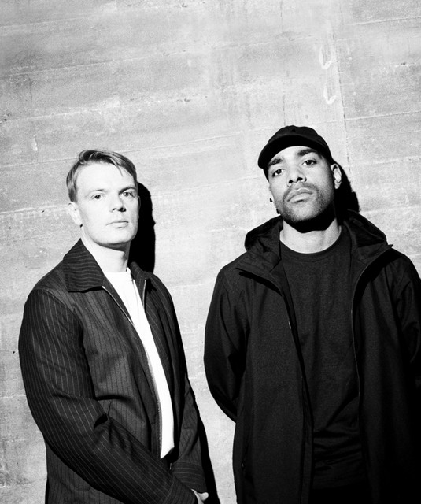

Ukendt Kunstner is a Danish duo who creates music in genres from R&B to rap. They both grew up in Copenhagen and palyed a part of the city's music movement in the early 2010's. Their love for their city was also the epitome of what made them famous, when they released København featuring Murro in 2012 only on YouTube. After years of heavy success, they announced in 2016 through a documentary that they would take a break from creating music together. However, they unexpectedly teamed up again in 2023 for a new album which was well-received by the public. In September 2026 they announced a new album "SORT" only to be viewed in cinemas. We all are waiting desperately to see what they have created for us this time.